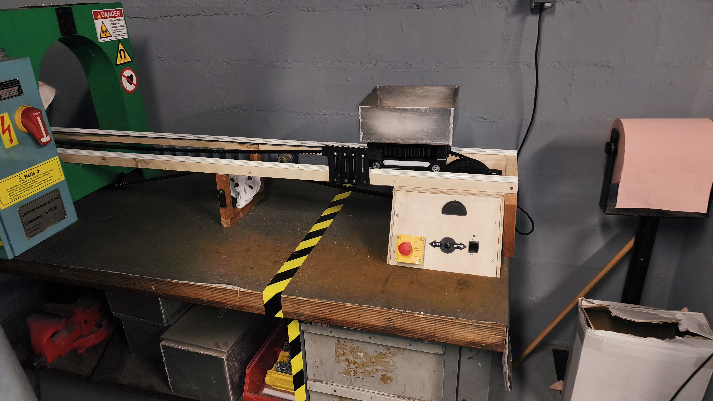
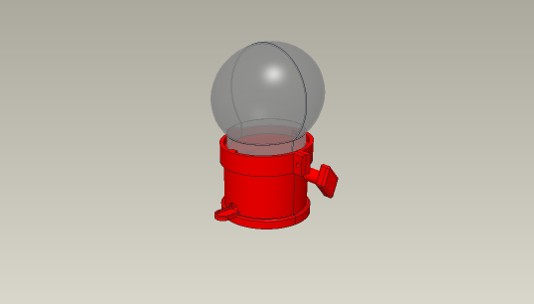

Prototype automatisé de banc de démagnétisation
STAGE — BUREAU D'ÉTUDES
Automatisation d'un banc de démagnétisation
Lors de mon stage au pôle CND de la Base aérienne 123 Orléans-Bricy, j'ai travaillé sur la conception d'un prototype permettant d'automatiser le déplacement d'un banc de démagnétisation.
L'objectif était de limiter les manipulations manuelles de l'opérateur et d'améliorer la répétabilité du procédé. J'ai participé aux différentes étapes du projet : analyse du système existant, recherche de solutions, conception mécanique, modélisation 3D, prototypage, assemblage et essais.
Le prototype intègre notamment un déplacement motorisé ainsi qu'un système permettant la rotation de la pièce lors de son passage dans le tunnel de démagnétisation.

Distributeur à bonbon
PROJET SCOLAIRE — GMP
Conception d'une machine à bonbons
À la demande d’un client, j’ai conçu et fabriqué un mécanisme de distribution de bonbons destiné à une épreuve lors d’un événement. La solution devait répondre à des exigences de montage rapide, de fiabilité et de répétabilité.
J’ai traduit le besoin en solution mécanique, réalisé la conception et l’assemblage 3D sous CAO, fabriqué les composants en impression 3D, puis réalisé les essais et les ajustements nécessaires à la validation du mécanisme.
EN IMAGES
Présentation de mes travaux
Retrouvez également une présentation vidéo de mes travaux de conception et de modélisation.
MA MÉTHODE
Analyser → Concevoir → Prototyper → Tester
Ces différents projets m'ont permis de développer une approche concrète de la conception mécanique, depuis l'analyse d'un besoin jusqu'à la réalisation et aux essais d'un prototype.
Découvrir mes compétences